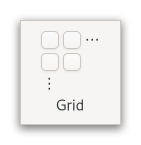

Gtk.Grid¶
Example¶
- Subclasses
None
Methods¶
- Inherited
Gtk.Widget (181), GObject.Object (37), Gtk.Accessible (15), Gtk.Buildable (1), Gtk.Orientable (2)
- Structs
class |
|
|
|
|
|
|
|
|
|
|
|
|
|
|
|
|
|
|
|
|
|
|
|
|
|
|
|
|
|
|
|
|
Virtual Methods¶
Properties¶
- Inherited
Name |
Type |
Flags |
Short Description |
|---|---|---|---|
r/w/en |
|||
r/w/en |
|||
r/w/en |
|||
r/w/en |
|||
r/w/en |
Signals¶
- Inherited
Fields¶
- Inherited
Name |
Type |
Access |
Description |
|---|---|---|---|
parent_instance |
r |
Class Details¶
- class Gtk.Grid(**kwargs)¶
- Bases
- Abstract
No
- Structure
GtkGridis a container which arranges its child widgets in rows and columns.An example
Gtk.GridIt supports arbitrary positions and horizontal/vertical spans.
Children are added using [method`Gtk`.Grid.attach]. They can span multiple rows or columns. It is also possible to add a child next to an existing child, using [method`Gtk`.Grid.attach_next_to]. To remove a child from the grid, use [method`Gtk`.Grid.remove].
The behaviour of
GtkGridwhen several children occupy the same grid cell is undefined.Every child in a
GtkGridhas access to a custom [iface`Gtk`.Buildable] element, called<layout>. It can by used to specify a position in the grid and optionally spans. All properties that can be used in the<layout>element are implemented by [class`Gtk`.GridLayoutChild].It is implemented by
GtkWidgetusing [class`Gtk`.LayoutManager].To showcase it, here is a simple example:
``xml <object class=”GtkGrid” id=”my_grid”>
- <child>
- <object class=”GtkButton” id=”button1”>
<property name=”label”>Button 1</property> <layout>
<property name=”column”>0</property> <property name=”row”>0</property>
</layout>
</object>
</child> <child>
- <object class=”GtkButton” id=”button2”>
<property name=”label”>Button 2</property> <layout>
<property name=”column”>1</property> <property name=”row”>0</property>
</layout>
</object>
</child> <child>
- <object class=”GtkButton” id=”button3”>
<property name=”label”>Button 3</property> <layout>
<property name=”column”>2</property> <property name=”row”>0</property> <property name=”row-span”>2</property>
</layout>
</object>
</child> <child>
- <object class=”GtkButton” id=”button4”>
<property name=”label”>Button 4</property> <layout>
<property name=”column”>0</property> <property name=”row”>1</property> <property name=”column-span”>2</property>
</layout>
</object>
</child>
</object> ``
It organizes the first two buttons side-by-side in one cell each. The third button is in the last column but spans across two rows. This is defined by the
row-spanproperty. The last button is located in the second row and spans across two columns, which is defined by thecolumn-spanproperty.- CSS nodes
GtkGriduses a single CSS node with namegrid.- Accessibility
Until GTK 4.10,
GtkGridused theGTK_ACCESSIBLE_ROLE_GROUProle.Starting from GTK 4.12,
GtkGriduses theGTK_ACCESSIBLE_ROLE_GENERICrole.- attach(child, column, row, width, height)[source]¶
- Parameters
child (
Gtk.Widget) – the widget to addcolumn (
int) – the column number to attach the left side of child torow (
int) – the row number to attach the top side of child towidth (
int) – the number of columns that child will spanheight (
int) – the number of rows that child will span
Adds a widget to the grid.
The position of child is determined by column and row. The number of “cells” that child will occupy is determined by width and height.
- attach_next_to(child, sibling, side, width, height)[source]¶
- Parameters
child (
Gtk.Widget) – the widget to addsibling (
Gtk.WidgetorNone) – the child of self that child will be placed next to, orNoneto place child at the beginning or endside (
Gtk.PositionType) – the side of sibling that child is positioned next towidth (
int) – the number of columns that child will spanheight (
int) – the number of rows that child will span
Adds a widget to the grid.
The widget is placed next to sibling, on the side determined by side. When sibling is
None, the widget is placed in row (for left or right placement) or column 0 (for top or bottom placement), at the end indicated by side.Attaching widgets labeled
[1],[2],[3]with@sibling == %NULLand@side == %GTK_POS_LEFTyields a layout of[3][2][1].
- get_baseline_row()[source]¶
- Returns
the row index defining the global baseline
- Return type
Returns which row defines the global baseline of self.
- get_child_at(column, row)[source]¶
- Parameters
- Returns
the child at the given position
- Return type
Gtk.WidgetorNone
Gets the child of self whose area covers the grid cell at column, row.
- get_column_homogeneous()[source]¶
- Returns
whether all columns of self have the same width.
- Return type
Returns whether all columns of self have the same width.
- get_column_spacing()[source]¶
- Returns
the column spacing of self
- Return type
Returns the amount of space between the columns of self.
- get_row_baseline_position(row)[source]¶
- Parameters
row (
int) – a row index- Returns
the baseline position of row
- Return type
Returns the baseline position of row.
See [method`Gtk`.Grid.set_row_baseline_position].
- get_row_homogeneous()[source]¶
- Returns
whether all rows of self have the same height.
- Return type
Returns whether all rows of self have the same height.
- get_row_spacing()[source]¶
- Returns
the row spacing of self
- Return type
Returns the amount of space between the rows of self.
- insert_column(position)[source]¶
- Parameters
position (
int) – the position to insert the column at
Inserts a column at the specified position.
Children which are attached at or to the right of this position are moved one column to the right. Children which span across this position are grown to span the new column.
- insert_next_to(sibling, side)[source]¶
- Parameters
sibling (
Gtk.Widget) – the child of self that the new row or column will be placed next toside (
Gtk.PositionType) – the side of sibling that child is positioned next to
Inserts a row or column at the specified position.
The new row or column is placed next to sibling, on the side determined by side. If side is
Gtk.PositionType.TOPorGtk.PositionType.BOTTOM, a row is inserted. If side isGtk.PositionType.LEFTofGtk.PositionType.RIGHT, a column is inserted.
- insert_row(position)[source]¶
- Parameters
position (
int) – the position to insert the row at
Inserts a row at the specified position.
Children which are attached at or below this position are moved one row down. Children which span across this position are grown to span the new row.
- query_child(child)[source]¶
- Parameters
child (
Gtk.Widget) – aGtkWidgetchild of self- Returns
- column
the column used to attach the left side of child
- row
the row used to attach the top side of child
- width
the number of columns child spans
- height
the number of rows child spans
- Return type
Queries the attach points and spans of child inside the given
GtkGrid.
- remove(child)[source]¶
- Parameters
child (
Gtk.Widget) – the child widget to remove
Removes a child from self.
The child must have been added with [method`Gtk`.Grid.attach] or [method`Gtk`.Grid.attach_next_to].
- remove_column(position)[source]¶
- Parameters
position (
int) – the position of the column to remove
Removes a column from the grid.
Children that are placed in this column are removed, spanning children that overlap this column have their width reduced by one, and children after the column are moved to the left.
- remove_row(position)[source]¶
- Parameters
position (
int) – the position of the row to remove
Removes a row from the grid.
Children that are placed in this row are removed, spanning children that overlap this row have their height reduced by one, and children below the row are moved up.
- set_baseline_row(row)[source]¶
- Parameters
row (
int) – the row index
Sets which row defines the global baseline for the entire grid.
Each row in the grid can have its own local baseline, but only one of those is global, meaning it will be the baseline in the parent of the self.
- set_column_homogeneous(homogeneous)[source]¶
-
Sets whether all columns of self will have the same width.
- set_column_spacing(spacing)[source]¶
- Parameters
spacing (
int) – the amount of space to insert between columns
Sets the amount of space between columns of self.
- set_row_baseline_position(row, pos)[source]¶
- Parameters
row (
int) – a row indexpos (
Gtk.BaselinePosition) – aGtkBaselinePosition
Sets how the baseline should be positioned on row of the grid, in case that row is assigned more space than is requested.
The default baseline position is
Gtk.BaselinePosition.CENTER.
Property Details¶
- Gtk.Grid.props.baseline_row¶
- Name
baseline-row- Type
- Default Value
0- Flags
The row to align to the baseline when valign is using baseline alignment.
- Gtk.Grid.props.column_homogeneous¶
- Name
column-homogeneous- Type
- Default Value
- Flags
If
True, the columns are all the same width.
- Gtk.Grid.props.column_spacing¶
- Name
column-spacing- Type
- Default Value
0- Flags
The amount of space between two consecutive columns.
- Gtk.Grid.props.row_homogeneous¶
- Name
row-homogeneous- Type
- Default Value
- Flags
If
True, the rows are all the same height.
- Gtk.Grid.props.row_spacing¶
- Name
row-spacing- Type
- Default Value
0- Flags
The amount of space between two consecutive rows.